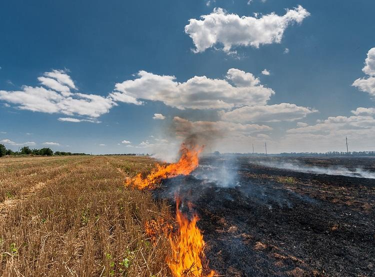

Tecnologia👨💻
Meta Connect 2024 com diversas Inovações e Avanços Tecnológicos

A Meta, anteriormente conhecida como Facebook, realizou seu evento anual Meta Connect 2024, trazendo uma série de anúncios que prometem moldar o futuro da tecnologia. O CEO da empresa, Mark Zuckerberg, liderou a apresentação, destacando os avanços significativos em hardware, software, inteligência artificial (IA) e realidade aumentada (AR).
O evento, que ocorreu nos dias 25 e 26 de setembro, foi transmitido online e atraiu a atenção de desenvolvedores, entusiastas da tecnologia e usuários ao redor do mundo. A conferência teve como foco principal as inovações em IA e os novos recursos para os aplicativos da empresa, além de compartilhar os últimos desenvolvimentos em realidade mista e wearables.
Um dos destaques do evento foi o anúncio de atualizações para o Meta Quest 3, o headset de realidade virtual lançado no ano anterior. Espera-se que a nova versão traga melhorias significativas em termos de desempenho gráfico e experiência de usuário. Além disso, a Meta apresentou uma sessão dedicada a explorar os recursos do dispositivo, indicando um compromisso contínuo com o aprimoramento da realidade virtual.
Outra novidade aguardada foi a atualização dos óculos inteligentes Ray-Ban Meta, que podem incorporar novos recursos de assistente virtual com a Meta AI, a inteligência artificial da empresa. Isso sugere uma integração mais profunda entre wearables e IA, proporcionando uma experiência mais imersiva e personalizada para os usuários.
A conferência também serviu como plataforma para apresentar o Llama, o modelo de linguagem da Meta, que promete revolucionar as interações entre humanos e máquinas. As capacidades e possíveis aplicações dessa tecnologia foram exploradas, indicando um futuro onde a comunicação com dispositivos será mais natural e intuitiva.
Além disso, a Meta anunciou atualizações e novas ferramentas para o Meta Horizon, sua plataforma social para o metaverso. Isso inclui aplicativos, ferramentas e serviços como o Meta Horizon Worlds e o Espaço Meta Horizon, que visam criar um ambiente virtual colaborativo e interativo.
Para aqueles interessados em acompanhar os desenvolvimentos e anúncios do Meta Connect 2024, o evento foi transmitido ao vivo nas páginas da Meta e do Meta for Developers no Facebook, permitindo que o público global participasse virtualmente das discussões e lançamentos.
Em breve resumo, o Meta Connect 2024 foi um marco para a Meta e para a indústria tecnológica como um todo. Os anúncios e atualizações apresentados refletem o compromisso da empresa em liderar a inovação e moldar o futuro da interação digital. Com esses avanços, a Meta está definindo o ritmo para uma nova era de experiências tecnológicas imersivas e conectadas.
Saúde💊
A Persistência da COVID-19 indicando uma Alta no Rio de Janeiro
À medida que o mundo continua a navegar pelas ondas da pandemia de COVID-19, o estado do Rio de Janeiro enfrenta um momento desafiador com indicadores da doença ainda em ascensão. O mais recente boletim do Panorama COVID-19, divulgado pela Secretaria de Estado de Saúde do Rio (SES-RJ), revela uma tendência preocupante de aumento nos indicadores da doença, apesar dos esforços contínuos para controlar sua propagação.
A taxa de positividade dos testes RT-PCR, um indicador-chave na avaliação da prevalência do vírus, subiu para 8% na Semana Epidemiológica 37, um aumento significativo em comparação com a taxa de 7% registrada na Semana 33. Esta variação de 14,29% é um sinal claro de que o vírus continua a circular ativamente na população.
Além disso, houve um aumento expressivo de 75% na positividade dos exames RT-PCR realizados em laboratórios privados, saltando de 8% para 14% entre as semanas comparadas. O teste rápido de antígeno também mostrou um aumento de 22,22%, passando de 9% para 11% no mesmo período. Esses números refletem não apenas a persistência do vírus, mas também a sua capacidade de se espalhar rapidamente.
Os atendimentos nas Unidades de Pronto Atendimento (UPAs) do estado também acompanharam essa tendência, com um crescimento de 11,39% para adultos e 21,14% para crianças, indicando um aumento nos casos de síndrome gripal compatíveis com a COVID-19. Em termos absolutos, isso representa um salto de 932 para 1.129 atendimentos infantis e de 1.176 para 1.310 para adultos.
O aumento constante de casos entre a população infantil é especialmente alarmante, pois destaca a vulnerabilidade dos mais jovens diante da doença. Os indicadores precoces, como taxa de positividade, atendimentos nas UPAs e solicitações de leitos, são fundamentais para sinalizar o aumento de casos antes mesmo que eles sejam registrados nos sistemas de informação oficiais.
A SES-RJ enfatiza a importância do monitoramento contínuo desses indicadores para preparar ações de combate ao crescimento da doença e reforçar as medidas de prevenção e controle, como a vacinação. Apesar do aumento dos indicadores precoces, a secretaria avalia que o cenário atual ainda não impactou as taxas de ocupação de leitos nas unidades de saúde, o que pode ser um sinal de que as estratégias de tratamento e prevenção estão tendo algum efeito.
Este panorama serve como um lembrete de que a pandemia de COVID-19 ainda não acabou e que a vigilância e a responsabilidade coletiva são essenciais para superar este desafio. A população é encorajada a continuar seguindo as diretrizes de saúde pública, incluindo o uso de máscaras, higienização das mãos e, mais importante, a vacinação completa para ajudar a reduzir a transmissão do vírus e proteger as comunidades vulneráveis.
Clima
A Importância da Estabilidade Climática para o Sucesso do Agronegócio Brasileiro
O agronegócio é um dos pilares da economia brasileira, representando uma parcela significativa do Produto Interno Bruto (PIB) do país. No entanto, a produtividade e o sucesso desse setor estão intrinsecamente ligados à estabilidade climática, uma realidade que foi recentemente destacada pelo presidente do Instituto Brasileiro do Meio Ambiente e dos Recursos Naturais Renováveis (Ibama), Rodrigo Agostinho.
Durante um debate no Senado sobre as queimadas que têm devastado regiões da Amazônia, do Pantanal e do Cerrado, Agostinho enfatizou a dependência do agronegócio em relação ao clima estável. Ele alertou que sem a segurança climática, o principal recurso da economia brasileira poderia ser comprometido.
A sessão temática no Senado também foi palco para a defesa do aumento das penas para os responsáveis por incêndios criminosos, uma medida que Agostinho considera crucial para combater a impunidade em relação aos crimes ambientais no Brasil. Atualmente, as penas variam de dois a seis anos conforme o Código Penal e de dois a quatro anos segundo a lei de crimes ambientais. O presidente do Ibama argumentou que a legislação brasileira é insuficiente e que é necessária coragem para revisar as penas atuais, visando não apenas os incêndios florestais, mas também outros crimes como grilagem e desmatamento.
A discussão sobre as queimadas e a legislação ambiental é de extrema relevância, pois os incêndios florestais não são apenas uma tragédia ecológica, mas também agravam os efeitos das mudanças climáticas, impactando a saúde das populações, a estabilidade climática e, consequentemente, a economia do país. A senadora Leila Barros, presidente da Comissão de Meio Ambiente (CMA), reforçou que além da preservação ambiental, está em jogo a saúde das populações e a própria economia brasileira.
O ministro da Casa Civil, Rui Costa, também entrou na discussão, realizando uma reunião interministerial para o acompanhamento dos incêndios florestais no Brasil. O encontro, que ocorreu no Palácio do Planalto, contou com a participação de representantes de diversos ministérios, evidenciando a importância do tema e a necessidade de uma ação coordenada entre as diferentes esferas do governo.
Este debate ressalta a importância de políticas públicas eficazes e de uma legislação ambiental robusta para garantir a estabilidade climática, que é fundamental para o sucesso do agronegócio brasileiro. A sustentabilidade do setor agrícola depende da capacidade do país de proteger seus recursos naturais e de implementar práticas que promovam um equilíbrio entre desenvolvimento econômico e conservação ambiental. A atenção dada a este tema pelo governo e pelo legislativo é um passo positivo na direção de um futuro mais sustentável para o Brasil.